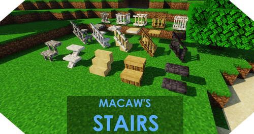

Macaw's Stairs
Macaw's Stairs додає в Майнкрафт велику кількість різних варіантів сходів та поручнів.
Створюйте сходи з більшості ванільних матеріалів і додайте до них перила, форму яких можна поміняти під свої потреби за допомогою ножиць.
На одному блоці можна розмістити до чотирьох поручнів.
Встановлення:
1. Завантажити мод
2. Встановити Forge (Якщо не встановлений)
3. Розпакувати мод в папку mods
Приклад: C:/Users/(ваш профіль)/AppData/Roaming/.minecraft/mods
(Шлях може відрізнятися в залежності від того, який лаунчер у вас)
4. Готово! Можна грати!
Версії:
1.20.2
Завантажити файл1.20.1
Завантажити файл1.20
Завантажити файл1.19.4
Завантажити файл1.19.3
Завантажити файл1.19.2
Завантажити файл1.19.1
Завантажити файл